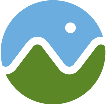
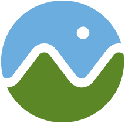
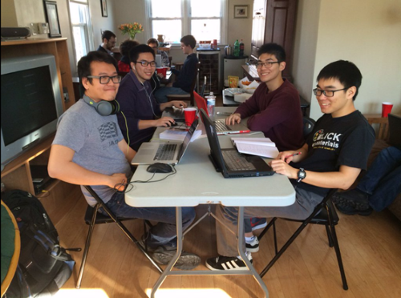
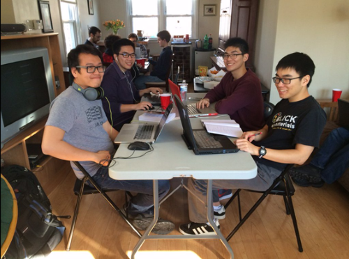

I work at the intersection of computer graphics, geospatial, and the web in software development and education.
DMD and CGGT students - I am seeking students for independent study projects in Spring 2017.
My contributions to the field include
- Starting Cesium, an open-source JavaScript library for world-class 3D globes and maps
- Writing and editing books: WebGL Insights, OpenGL Insights, and 3D Engine Design for Virtual Globes
- Co-creating glTF, the runtime asset format for WebGL, OpenGL ES, and OpenGL
- Starting 3D Tiles for streaming massive heterogeneous 3D geospatial datasets (in progress)
- Teaching GPU Programming and Architecture, with students that received positions at NVIDIA, AMD, Qualcomm, and various game and movie studios
- Giving talks at SIGGRAPH, FOSS4G, and COM.Geo, and other conferences
- Writing chapters for the GPU Pro and Game Engine Gems series
- Reviewing various graphics courses, books, and publications. I’m on the editorial board for the Journal of Computer Graphics Techniques (JCGT)
My interests include
- Computer graphics - WebGL, OpenGL, virtual globes, massive models, 3D engine design, asset formats, real-time rendering, and GPU architecture
- Software development - framework design, unit testing, parallelism, JavaScript, Node.js, recruitment, and technical interviews
- Open source software - development practices, building community, culture, code sprints, hackathons, and business models
- Moving our field forward - teaching, giving talks, writing, editing, and mentoring


 
  
